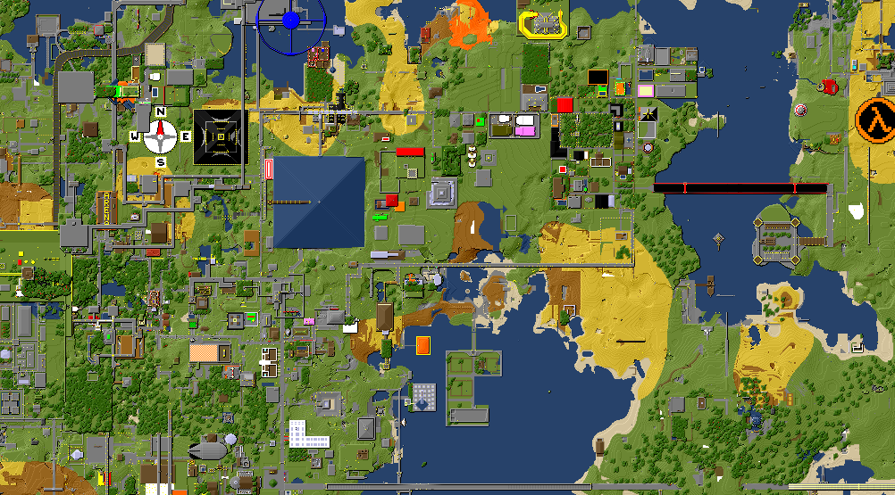

Redcrab
Redcrab was a very popular server during late 2011-2013, and was played on by nearly all of the current long time members.
Maps
Note that Redcrab started to drop in users after 2012. There isn't too much difference between these two maps.
